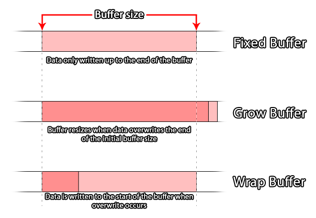
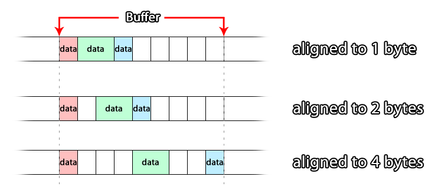

GameMaker Studio 2 bietet in GML eine Reihe von Funktionen für den Umgang mit Puffern. Die meisten Leute sollten mit diesem Begriff vertraut sein, da er im Umgang mit Computern und beim Programmieren ständig verwendet wird. Wenn Sie jedoch das Wort kennen, bedeutet das nicht, dass Sie wirklich wissen, was es bedeutet. Auf dieser Seite soll daher erläutert werden, was ein Puffer ist und wie er im Rahmen der Programmierung von GameMaker Studio 2 kann. Die allgemeine Funktionsweise ist jedoch die gleiche, unabhängig von der Sprache oder der Technologie. Dies ist einer der Gründe, warum dies der Fall ist so wichtig.
Ein Puffer (in Programmierung) ist im Grunde ein Speicherplatz im Systemspeicher, in dem kleine Datenpakete für fast alles (z. B. Datenübertragung, Kollisionen, Farbdaten usw.) gespeichert werden. Da es im Systemspeicher abgelegt wird, ist der Zugriff sehr schnell, und in der Regel wird ein Puffer für eine sehr kurzfristige Speicherung verwendet, z. B. das Empfangen von Netzwerkinformationen vor der Verarbeitung oder das Speichern eines Kontrollpunkts in Ihrem Spiel (dies wird im erklärt Beispiel weiter unten auf der Seite).Puffer werden durch Zuweisung eines in Byte berechneten Speicherplatzes im Systemspeicher erstellt, der dann für Ihr Spiel reserviert ist, solange Ihr Spiel läuft oder bis Sie den Puffer mit der entsprechenden Funktion löschen. Dies bedeutet, dass der Puffer auch dann noch vorhanden ist, wenn das Spiel nicht im Fokus ist (z. B. wird das Spiel bei einem Anruf auf einem mobilen Gerät in den Hintergrund gestellt), wenn das Spiel in den Hintergrund gestellt wird Puffer geht verloren.
HINWEIS : Beim Neustart des Spiels wird der Puffer nicht gelöscht oder gelöscht! Dies verhindert jedoch den weiteren Zugriff auf den zuvor erstellten Puffer, da das ID- Handle verloren gegangen ist und ein Speicherleck verursacht wird, das Ihr Spiel letztendlich zum Absturz bringen kann. Denken Sie daran, beim Neustart eines Spiels zuerst den Puffer zu löschen.
GameMaker Studio 2 ermöglicht die Erstellung von vier verschiedenen Puffertypen. Der Grund dafür ist, dass Puffer ein hochoptimiertes temporäres Speichermedium sind. Daher sollten Sie einen Puffer erstellen, der für den Datentyp geeignet ist, den Sie speichern möchten. Andernfalls könnten Fehler auftreten oder Engpässe auftreten in Ihrem Code. Bevor wir dies näher erläutern, betrachten wir die vier verfügbaren Puffertypen (als Konstanten in GML definiert):
Konstante Beschreibung buffer_fixed
Ein Puffer mit fester Größe in Byte. Die Größe wird beim Erstellen des Puffers festgelegt und kann nicht mehr geändert werden.buffer_grow
Ein Puffer, der beim Hinzufügen von Daten dynamisch wächst. Sie erstellen es mit einer Anfangsgröße (dies sollte eine Annäherung an die Größe der zu speichernden Daten sein), und es wird dann erweitert, um weitere Daten zu akzeptieren, die diese Anfangsgröße überfluten.buffer_wrap
Ein Puffer, in den die Daten umgebrochen werden. Wenn die hinzugefügten Daten die Grenze der Puffergröße erreichen, wird das Überschreiben wieder an den Anfang des Puffers gesetzt, und das weitere Schreiben wird ab diesem Punkt fortgesetzt.buffer_fast
Dies ist ein spezieller "abgespeckter" Puffer, der extrem schnell lesen und schreiben kann. Es kann jedoch nur mit verwendet werden buffer_u8 Datentypen und muss 1 Byte ausgerichtet sein. (Informationen zu Datentypen und Byte-Ausrichtung finden Sie weiter unten auf dieser Seite.)
Dies sind die Puffertypen, die Ihnen bei der Verwendung von GameMaker Studio 2 zur Verfügung stehen. Welche Sie wählen, hängt stark von der Verwendung ab, für die Sie sie einsetzen möchten. Zum Beispiel würde ein Wachstumspuffer zum Speichern eines "Schnappschusses" von Daten verwendet, um ein Sicherungsspiel zu erstellen, da Sie nicht wissen, welche Datenmenge tatsächlich darin abgelegt wird, oder wenn Sie einen schnellen Puffer verwenden Sie wissen, dass die Werte, mit denen Sie arbeiten, alle zwischen 0 und 255 oder -128 und 127 liegen, zum Beispiel bei der Verarbeitung von RGB-Daten aus einem Bild.  Beim Erstellen eines Puffers sollten Sie immer versuchen, ihn in einer dem Typ angemessenen Größe zu erstellen. Die allgemeine Regel besagt, dass der Puffer für die maximale Größe der zu speichernden Daten erstellt werden sollte. Verwenden Sie einen Wachstumspuffer, um Überschreibfehler zu vermeiden.
Der eigentliche Code zum Erstellen eines Puffers würde ungefähr so aussehen:player_buffer = buffer_create(16384, buffer_fixed, 2);
Dies würde einen festen Puffer von 16384 Bytes erzeugen und das Byte auf 2 ausrichten, wobei die Funktion einen eindeutigen ID- Wert zurückgibt, der in einer Variablen für die spätere Referenzierung dieses Puffers gespeichert wird. Nun haben wir das grundlegende Konzept eines Puffers erklärt, in dem Sie etwas über Datentypen und die zuvor erwähnte Byte-Ausrichtung erfahren sollten.
Wenn Sie Daten lesen und in einen Puffer schreiben, tun Sie dies in Datenblöcken, die durch ihren Datentyp '' 'definiert sind. Der Datentyp '' '' bestimmt die Anzahl der Bytes, die innerhalb des Puffers für den zu schreibenden Wert reserviert sind, und es ist wichtig, dass Sie dies richtig machen, da Sie sonst sehr seltsame Ergebnisse (oder sogar Fehler) für Ihren Code erhalten.
Puffer werden sequentiell beschrieben (und aus diesem gelesen), indem ein Datenstück nach dem anderen geschrieben wird, wobei jedes Datenelement vom Settyp ist. Dies bedeutet, dass Sie im Idealfall wissen sollten, welche Daten Sie jederzeit in den Puffer schreiben. Diese Datentypen werden in GML durch die folgenden Konstanten definiert:
Datentyp Konstante Bytes Beschreibung buffer_u8 1
Eine vorzeichenlose 8-Bit-Ganzzahl. Dies ist ein positiver Wert von 0 bis 255.buffer_s8 1
Eine vorzeichenbehaftete 8-Bit-Ganzzahl. Dies kann ein positiver oder negativer Wert von -128 bis 127 sein (0 wird als positiv eingestuft).buffer_u16 2
Eine vorzeichenlose 16-Bit-Ganzzahl. Dies ist ein positiver Wert von 0 - 65.535.buffer_s16 2
Eine vorzeichenbehaftete 16-Bit-Ganzzahl. Dies kann ein positiver oder negativer Wert von -32.768 bis 32.767 sein (0 wird als positiv eingestuft).buffer_f16 2
Eine 16-Bit-Gleitkommazahl. Dies kann ein positiver oder negativer Wert im Bereich von +/- 65504 sein. (Derzeit nicht unterstützt!)buffer_u32 4
Eine vorzeichenlose 32-Bit-Ganzzahl. Dies ist ein positiver Wert von 0 bis 4.294.967.295.buffer_s32 4
Eine vorzeichenbehaftete 32-Bit-Ganzzahl. Dies kann ein positiver oder negativer Wert von -2.147.483.648 bis 2.147.483.647 sein (0 wird als positiv eingestuft).buffer_f32 4
Eine 32-Bit-Gleitkommazahl. Dies kann ein positiver oder negativer Wert im Bereich von +/- 16777216 sein.buffer_u64 8
Ein 64-Bit-Ganzzahl ohne Vorzeichen. (Derzeit nicht von allen Pufferfunktionen unterstützt!)buffer_f64 8
Eine 64-Bit-Gleitkommazahl.buffer_bool 1
Ein boolescher Wert. Kann nur 1 oder 0 sein ( true oder false )Pufferzeichenfolge N / A
Dies ist eine UTF-8-Null-Zeichenfolge (0x00). Grundsätzlich wird ein GameMaker String in den Puffer GameMaker und am Ende eine 0 gesetzt.
Angenommen, Sie haben einen Puffer erstellt und möchten Informationen in den Puffer schreiben, dann würden Sie etwa folgenden Code verwenden:buffer_write(buff, buffer_bool, global.Sound);
buffer_write(buff, buffer_bool, global.Music);
buffer_write(buff, buffer_s16, obj_Player.x);
buffer_write(buff, buffer_s16, obj_Player.y);
buffer_write(buff, buffer_string, global.Player_Name);
Wenn Sie sich das Beispiel oben ansehen, können Sie sehen, dass Sie verschiedene Datentypen in einen Puffer schreiben können (Sie sind bei Verwendung des schnellen Puffertyps nur auf einen bestimmten Datentyp beschränkt), und diese Daten werden nacheinander in den Puffer eingefügt (obwohl dies der Fall ist.) Die tatsächliche Position im Puffer hängt von seiner Byte-Ausrichtung ab (siehe unten). Dies gilt auch für das Lesen von Informationen aus dem Puffer. Im obigen Beispiel würden Sie in derselben Reihenfolge aus dem Puffer lesen, in der Sie die Daten geschrieben haben, und zwar auf denselben Datentyp prüfen, z. B.:global.Sound = buffer_read(buff, buffer_bool);
global.Music = buffer_read(buff, buffer_bool);
obj_Player.x = buffer_read(buff, buffer_s16);
obj_Player.y = buffer_read(buff, buffer_s16);
global.Player_Name = buffer_read(buff, buffer_string);
Wie Sie sehen, lesen Sie die Informationen in derselben Reihenfolge aus, in der Sie sie in den Puffer eingelesen haben. Weitere Informationen zum Hinzufügen und Entfernen von Daten aus dem Puffer finden Sie im Abschnitt Beispiele unten.
Wenn Sie diese Seite gelesen haben, haben Sie Verweise auf die Byte-Ausrichtung eines Puffers gesehen. Dies bezieht sich im Wesentlichen auf die Position, an der neue Daten in einem bestimmten Puffer gespeichert werden. Wie funktioniert das? Für einen einzelnen Byte-ausgerichteten Puffer wird jedes Datenstück sequentiell in den Puffer geschrieben, wobei jedes neue Datenstück direkt nach dem vorherigen hinzugefügt wird. Ein 2-Byte-ausgerichteter Puffer schreibt jedoch jedes Datenelement in Intervallen von 2 Bytes, sodass der nächste Schreibvorgang selbst dann verschoben wird, wenn er aus 1 Byte Daten besteht.  Wenn Ihre Byte-Ausrichtung beispielsweise auf 4 Byte eingestellt ist und Sie ein einzelnes Datenstück mit einer Größe von 1 Byte schreiben, dann führen Sie einen Pufferspeicher aus (ein Tell erhält die aktuelle Position zum Lesen / Schreiben des Puffers) Ich bekomme einen Offset von 1 (der Offset ist in diesem Fall die Anzahl der Bytes vom Start des Puffers bis zur aktuellen Lese- / Schreibposition).
Wenn Sie jedoch ein weiteres Datenstück schreiben, das ebenfalls 1 Byte groß ist, dann geben Sie einen Puffer an, und Sie erhalten einen Versatz von 5 Byte (obwohl Sie nur 2 Byte Daten geschrieben haben), da die Daten durch das Alignment aufgefüllt werden um es mit der 4-Byte-Pufferausrichtung auszurichten.
Im Grunde bedeutet dies, dass die Ausrichtung nur die Position beeinflusst, in die Dinge geschrieben werden. Wenn Sie also nach dem Schreiben eines Puffers sagen, wird die aktuelle Schreibposition zurückgegeben, die unmittelbar auf die zuvor geschriebenen Daten folgt. Wenn Sie jedoch ein weiteres Datenstück schreiben, wird der Puffer intern die Schreibposition entlang des nächsten Vielfachen der Ausrichtungsgröße verschieben, bevor das Datenelement tatsächlich geschrieben wird.
Nachfolgend finden Sie einige Beispiele für die Verwendung von Puffern.
Ein einfaches Beispiel für die Verwendung eines Puffers in einem GameMaker Studio 2 Spiel für jede Plattform ist die Funktion game_save_buffer. Diese Funktion erstellt einen "Schnappschuss" des aktuellen Spielstatus und speichert ihn in einem vordefinierten Puffer, aus dem gelesen werden kann, um das Spiel an diesem Punkt erneut zu laden.HINWEIS: Diese Funktion ist sehr eingeschränkt und wurde für Anfänger entwickelt, um ein Checkpoint-System schnell zum Laufen zu bringen. Fortgeschrittene Benutzer können es jedoch vorziehen, ihr eigenes System mithilfe der Dateifunktionen zu codieren, da das Spiel nicht gespeichert wird alle dynamischen Ressourcen, die Sie zur Laufzeit erstellen können, wie Datenstrukturen, Oberflächen, hinzugefügte Hintergründe und Sprites usw.
Als Erstes müssen Sie ein neues Objekt erstellen, um das Speichern und Laden zu steuern, sodass Sie eines erstellen und ein Ereignis erstellen erstellen können. In diesem Fall können Sie den folgenden Code eingeben:SaveBuffer = buffer_create(1024, buffer_grow, 1);
StateSaved = false;
In der ersten Zeile wird ein Wachstumspuffer (da wir die endgültige Größe der gespeicherten Daten nicht kennen) von 1024 Byte erstellt und auf 1 Byte ausgerichtet. Anschließend wird eine Variable erstellt, mit der geprüft wird, ob das Spiel gespeichert wurde oder nicht (dies wird zum Laden verwendet).
Als nächstes fügen wir ein Keypress-Event hinzu (zum Beispiel), in dem wir den aktuellen Spielstatus im erstellten Puffer speichern:StateSaved = true;
buffer_seek(SaveBuffer, buffer_seek_start, 0);
game_save_buffer(SaveBuffer);
Das obige setzt zuerst die Steuervariable auf true (damit diese gespeichert wird, wenn wir das Spiel im Puffer speichern) und sucht dann den Anfang des Puffers, bevor der aktuelle Speicherzustand in den Puffer geschrieben wird. Warum benutzen wir? buffer_seek ? Nun, wie oben in der Pufferdatentypen Abschnitt erwähnt, können Sie auf einen Puffer von der letzten Position lesen und schreiben, dass Daten, die ihm zugefügt. Dies bedeutet, dass, wenn Sie nicht den Puffer stellen Sie dann zu Beginn sagen, zurück, wenn Sie sparen Sie die Daten in die Puffer an den aktuellen Puffern / Schreibposition gelesen werden hinzugefügt, so verwenden wir die Funktion buffer_seek um den Tell zum Pufferanfang zu bewegen.
Wir haben jetzt den aktuellen Spielstand in einem Puffer gespeichert. Der nächste Schritt wäre zu codieren, wie man es lädt, wahrscheinlich in einem anderen Keypress-Event:if StateSaved
{
buffer_seek(SaveBuffer, buffer_seek_start, 0);
game_load_buffer(SaveBuffer);
}
Das Spiel wird dann am Ende des Ereignisses geladen, in dem Sie den obigen Code eingeben.HINWEIS: Dies ist nur für den Einsatz in demselben Raum und nicht für die Generierung vollständig gespeicherter Spiele für das Schließen oder Neustarten des Spiels bestimmt!
Das letzte Objekt, das dem Controller-Objekt hinzugefügt werden soll, ist ein Bereinigungscode. Puffer werden im Speicher abgelegt. Wenn Sie also nicht bereinigen, wenn Sie damit fertig sind, können Sie Speicherlecks bekommen, die zu Verzögerungen führen und Ihr Spiel zum Absturz bringen. Sie würden also wahrscheinlich ein Raumende-Ereignis (aus der Kategorie Andere Ereignisse) hinzufügen mit:buffer_delete(SaveBuffer);
Dieses Objekt kann nun in einem Raum platziert werden und bei einem Tastendruck speichern und den Raumzustand aus einem Puffer laden.
Wenn Sie mit den Netzwerkfunktionen von GameMaker Studio 2 arbeiten, müssen Sie zum Erstellen des Datenpakets, das über die Netzwerkverbindung gesendet wird, Puffer verwenden. In diesem Beispiel soll gezeigt werden, wie dies ausgeführt wird. Aufgrund des Umfangs der Netzwerkmöglichkeiten soll jedoch nur gezeigt werden, wie die Puffer selbst verwendet werden und nicht das vollständige Netzwerksystem.
Als erstes zeigen wir die Erstellung und Verwendung eines Puffers für die Client-Seite der Netzwerkverbindung. Dieser Puffer wird verwendet, um kleine Datenpakete zu erstellen, die dann an den Server gesendet werden können. In der Ereigniserstellung einer Instanz würden wir einen Puffer wie folgt zuweisen:send_buff = buffer_create(256, buffer_grow, 1);
Wir machen den Puffer klein (256 Byte), da er nicht zum Speichern großer Datenmengen vorgesehen ist. Wir machen ihn zum Wachstumspuffer, um sicherzustellen, dass keine Fehler auftreten, wenn zu jedem Zeitpunkt mehr zu sendende Daten hinzugefügt werden müssen und die Ausrichtung auf festgelegt ist eine für die Bequemlichkeit.
Angenommen, wir möchten, dass unser Kunde Daten an den Server sendet. Dafür brauchen wir einen Puffer „Paket“, und in diesem Beispiel erstellen wir werden ein Tastendruckereignis senden, wie wenn der Spieler links - Taste drückt, um das Spiel zu bewegen. Dazu schreiben wir zuerst die erforderlichen Daten in den Puffer und senden sie dann ab:buffer_seek(buff, buffer_seek_start, 0);
buffer_write(buff, buffer_u8, 1);
buffer_write(buff, buffer_s16, vk_left);
buffer_write(buff, buffer_bool, true);
network_send_packet(client, buff, buffer_tell(buff));
Vor dem Schreiben in den Puffer wir die „tell“ an den Anfang des Puffers gesetzt haben, wie Vernetzung immer die Daten von Anfang an eines Puffers erfolgt. Dann schreiben wir den Prüfwert (dieser wird vom Server verwendet, um die Art des Ereignisses zu bestimmen), dann den verwendeten Schlüssel und dann den Status des Schlüssels (in diesem Fall) true für gedrückt). Dieser Puffer wird dann von der Netzwerkfunktion als Datenpaket gesendet. Beachten Sie, dass wir nicht den gesamten Puffer senden! Wir senden nur die geschriebenen Daten mit der buffer_tell Funktion, um die aktuelle Lese- / Schreibposition des Puffers zurückzugeben (denken Sie daran, dass das Schreiben in den Puffer das "tell" an das Ende des Geschriebenen schiebt).
Was ist mit dem Empfang der Daten auf dem Server? Das empfangene Datenpaket, das in den Puffer auf dem Server geschrieben und dann zum Aktualisieren des Spiels verwendet werden muss. Dafür würden wir das Netzwerk-asynchrone Ereignis im Netzwerkcontrollerobjekt des Servers verwenden, wie dieser vereinfachte Code unten zeigt:var buff = ds_map_find_value(async_load, "buffer");
if cmd == buffer_read(buff, buffer_u8);
{
key = buffer_read(buff, buffer_s16 );
key_state = buffer_read(buff, buffer_bool);
}
Das asynchrone Ereignis enthält ein spezielles temporäres Ereignis ds_map (wird am Ende des Ereignisses automatisch entfernt). Diese enthält je nach Art der vom Netzwerk eingehenden Daten unterschiedliche Informationen. In diesem Fall gehen wir davon aus, dass die Karte geprüft wurde und ein Pufferdatenpaket ist, das von einem Client gesendet wurde. Wir prüfen nun das erste Datenelement, das sich im Puffer befindet, um zu sehen, welche Art von Ereignis gesendet wurde. In diesem Fall stellt der Wert "1" ein Schlüsselereignis dar. Beim Codieren dieser Elemente sollten Sie jedoch Konstanten definieren, für die diese Werte gespeichert werden sollen Dinge vereinfachen - und dann die gedrückte Taste und ihren Zustand speichern ( true = gedrückt, false = freigegeben). Diese Informationen werden dann verwendet, um alle Clients mit dem neuen Status des sendenden Client-Players zu aktualisieren.HINWEIS: Der aus der ds_map erstellte Puffer wird am Ende des asynchronen Netzwerkereignisses automatisch entfernt, sodass keine Verwendung erforderlich ist buffer_delete Hier.